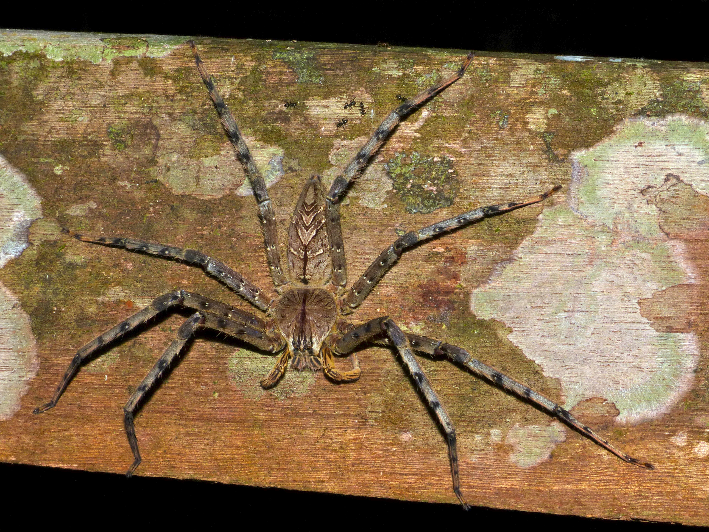

the huntsman spider lives in warm, tropical, and suptropical reigons which includes: Asia, Africa, Austrailia, and americas. In the U.S. the spiders are only seen in California, Georgia, Florida, South carolina, and Texas

Image from wikimedia commons
A huntsman spider can be identified by its large overall body, as well as its flat brown body and long legs. the spidern can also possibly have brown or grey mottled patterns.